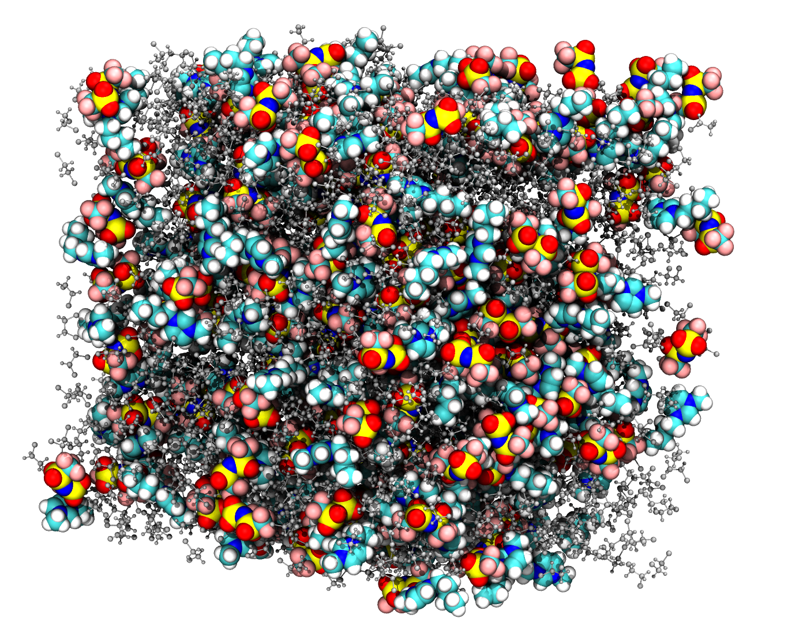
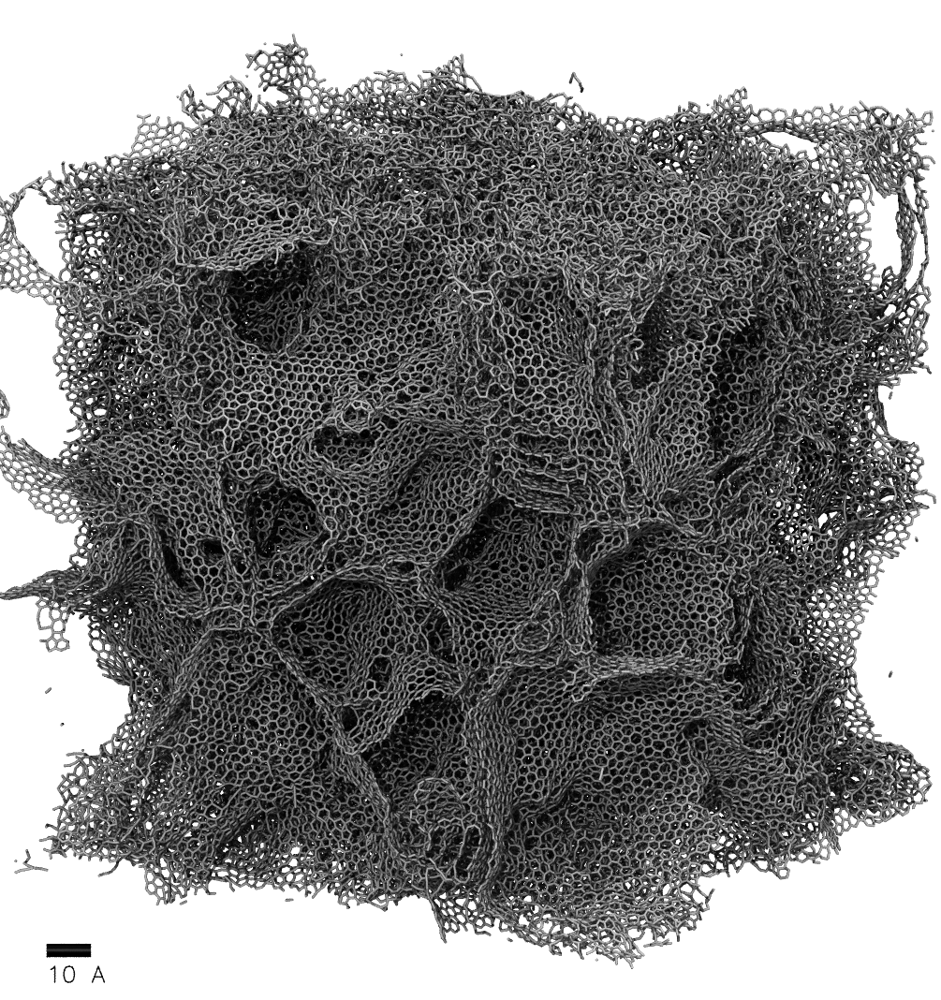

A nanodroplet of BMIM-Tf2N on graphene; unpublished work

BMIM-Tf2N (large spheres) and 1,2-dichloroethane (ball-and-stick); taken from my thesis

A periodic box of 200,000 carbon atoms in an amorphous nanoporous structure; identical to the systems reported in our 2017 paper in C but with 10 times as many atoms